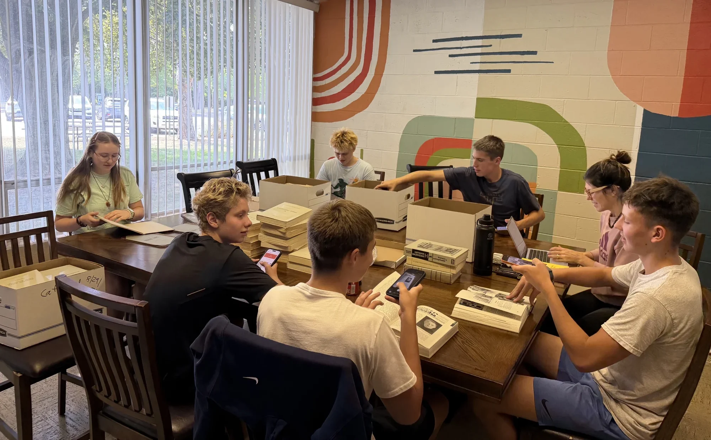

Preserving the sources of Lithuanian cultural memory, strengthening the institutions that transmit it, and preparing a new generation to carry that inheritance into the age of artificial intelligence.
Saugome lietuvių kultūros šaltinius, stipriname įstaigas, kurios juos perduoda, ir ruošiame kartą, kuri šį palikimą neš toliau.
Žiburio Foundation exists to ensure that this inheritance remains accessible, intelligible, and alive for future generations.
We preserve original sources, connect dispersed collections, support historical research, and develop new ways to study and transmit cultural memory. Our work brings together archival preservation, education, historical scholarship, and emerging technologies.
But the purpose is not simply to preserve more information. It is to preserve the human capacity to understand, interpret, and carry forward what has been inherited.
Žiburio Foundation saugo, skaitmenina ir aprašo Lietuvos diasporos archyvus, leidinius, sakytinę istoriją ir kitas kultūros vertybes.
Mokome jaunimą archyvų darbo, istorinių tyrimų, lietuvių kalbos ir atsakingo naujųjų technologijų naudojimo.
Tikslas nėra tik išsaugoti knygas. Tikslas – išsaugoti jų reikšmę.
Our programs are connected by a common purpose: to make Lithuanian cultural memory available for study, meaningful to new generations, and capable of informing the future.
Visus darbus jungia vienas tikslas: kad lietuviška atmintis būtų prieinama tyrėjui, suprantama jaunam žmogui ir naudinga ateičiai.
01
In the nineteenth century, Lithuanian knygnešiai carried prohibited books across borders to preserve the Lithuanian language and its written culture. Today, a new generation faces a different responsibility.
Through our Skaitmeniniai Knygnešiai program, young people work directly with historical books, periodicals, documents, and audiovisual records. They learn to digitize, investigate, contextualize, and publish primary sources while developing Lithuanian language skills, historical understanding, and technical competence.
Skaitmeniniai knygnešiai – Žiburio lituanistinės mokyklos inicijuota programa, tęsianti istorinę knygnešių misiją naujoje terpėje.
02
The Žiburio Archive brings together Lithuanian books, periodicals, documents, and other historical materials preserved by the Detroit Lithuanian community. These collections record the intellectual, religious, educational, and civic life of generations who maintained Lithuanian culture beyond the borders of Lithuania.
The Foundation works to preserve original materials, document their provenance, and make them accessible for scholarship, education, and public use.
Kiekviena knyga archyve yra atminties vienetas, kuris egzistuoja, turi struktūrą ir atskleidžia tiesą apie žmones, kurie ją sukūrė ir perdavė.
03
Preserving a source is the beginning. The Foundation also studies what these records contain and makes new work from them — research, writing, and publications that return the record to the community in a form people can use.
Save Our Lithuanian Parishes documents the institutions that sustained Lithuanian life in the United States. For generations these parishes were more than places of worship: they were centers of education, language, cultural organization, mutual assistance, and community life, and their schools, societies, libraries, and archives helped sustain Lithuanian identity across generations.
JAV lietuvių parapijų registras, kuriame aprašytos 155 parapijos ir kitos įstaigos.
Žiburio Foundation brings young people into the work itself—not merely as students learning about the past, but as participants in preserving, investigating, and extending a living cultural inheritance.
Kai gimnazistas katalogizuoja DP stovyklos knygą – jis įsitraukia į tęstinę atminties grandinę. Jie suvokia save ne kaip pasyvius kultūros vartotojus, o kaip aktyvius saugotojus.